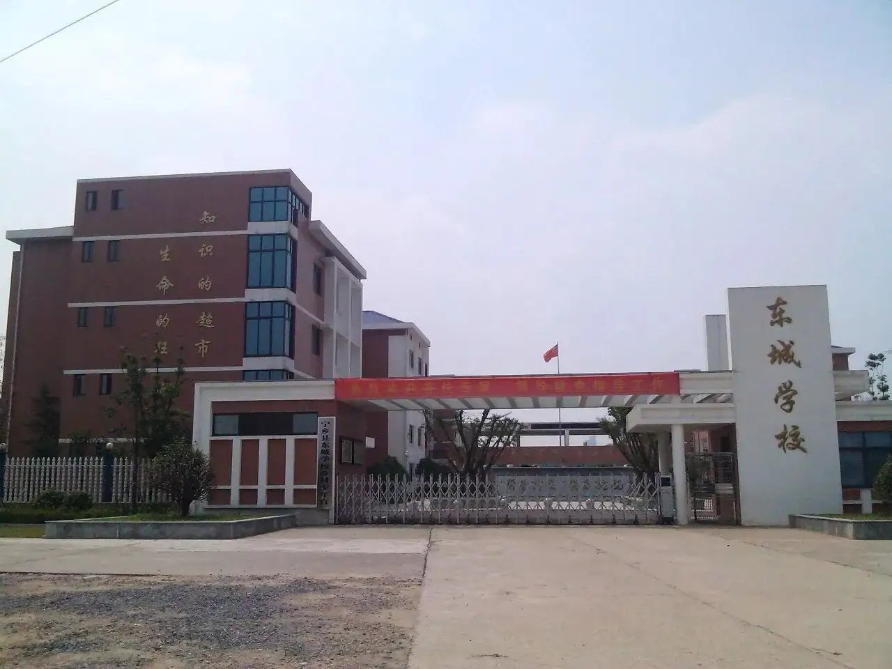
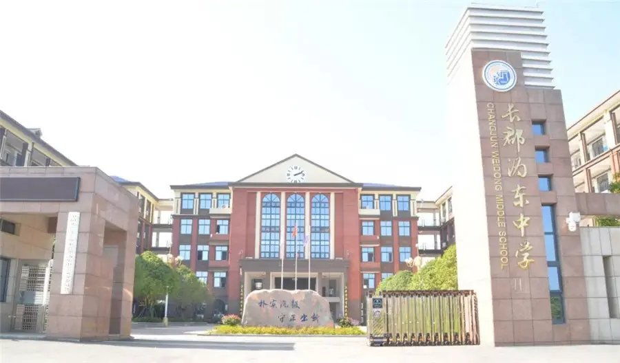
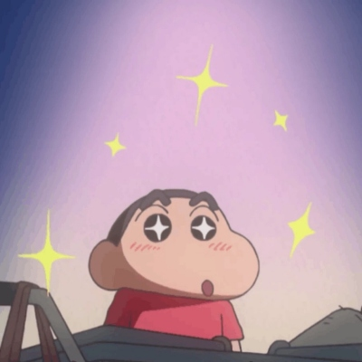
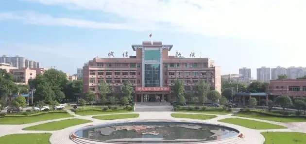

我的小学生活

在小学，我度过了一段无忧无虑的生活。
和现在的小学生不一样的是，当初的我根本没有那么多沉重的学习。
我可以放学后在回家路上肆意奔跑，和同学去买眼馋很久的小零食；我可以周末和朋友出去玩，玩着小女生幼稚的扮家家酒，或者陪妈妈出去逛街；
如果回老家会更让人快乐，春天陪奶奶上山，摘着开满山野的栀子花；夏天的野果成熟，酸酸甜甜的滋味至今让人怀念；秋天的院子前，种了好多年的柑树挂满黄澄澄的果子，年年都是酸酸的味道，但年年还是去尝它，然后摇摇头把剩下的摘了放在窗台；冬天年味渐浓，一大家子围着谈天说地，确实让人觉得分外美好。我永远记得那时的快乐，所以我学会让自己记住快乐，乐观常在。

我的初中生活
初中，我明白努力会有结果，同时也学会成人。
很幸运的是，人生中碰到的老师都是非常好的老师，耐心细致与鼓励指导都给了我莫大的帮助。
成绩是他们教给我知识、鼓励我努力的最终结果的体现，而学会耐心、学会刻苦、心怀感恩这些他们在言传身教地教我做人需要的品质，让我在人生这条道路上终身收益。

我的高中生活

高中，我遇到了珍惜的人。
人要是没有朋友，会孤独一辈子吧。
学会珍惜是她教会我的。步入高中才知道原来学习任务也可以这么重，每天在学习中度过，慢慢地变得既没办法全心全意学习，也没办法去看见身边的美好。
然后她出现了，和我一起散步、一起跑步、一起做劳动，一起去看傍晚的云、一起迎着朝阳跑向广场，或是缩着坐在学校书店，享受着难得的阅读时光。
我明白，学习是重要的，但是其他的美好也是不能忽视的，于是在短暂的闲暇时间，我也会努力发现美好，珍惜身边的美好。